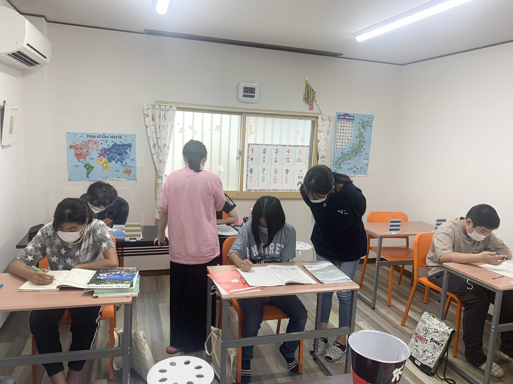
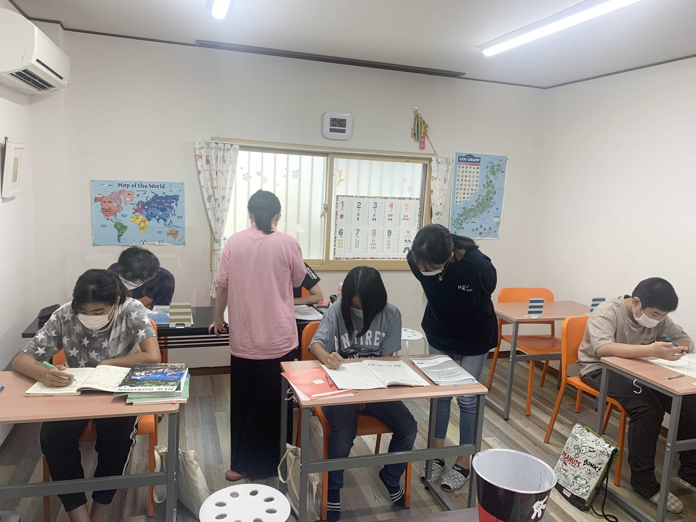

英語・英会話☓書道を通して
人間力を育てる
教室理念
親目線で「愛情」を持って子供に接する。 挨拶、礼儀徹底 皆で向上していける相乗効果を出す雰囲気作り 正解のない時代に「自分が出来ることを見つけ、夢を掴む力」を育む 成功体験が出来る場を作り、自信と経験による定着をさせていく 自ら目標設定し、自主性を養っていく 礼儀、挑戦する勇気、集中力、諦めない、自主性をつける＝「人間力」を育む。
クラス紹介
小学生クラス
小学生クラスでは論理的思考（言いたい事をまとめる力）と話すメンタル（話す勇気、積極性）から養っていきます。自分の意見が上手く伝えらなかったり、シャイな子供達もどんどん意見を言えるように育てていき、英語を通して、小学生の間から社会でも役立つ「人間力・自主性」を英語を通して養っていきます。
小学生ページはこちらから
中学生クラス
中学生クラスでは1年生から高校受験に向けた指導を行なっています。1年生の早いうちから受験を意識して学習に取り組んでもらうことで目標に向かって突き進む力を養っていきます。また、勉強への取り組み方だけでなく、みんなの前に出て生徒自らが説明することで理解を深めると同時に人に伝える力を養っていきます。高校受験を通過点として生徒たちにとって必要なマインドを伝えていきます。
中学生ページはこちらから
書道クラス
書道クラスでは文字を書くことに専念することで「集中力・忍耐力・観察力」を高めます。書道以外でも生きていく上で必要な力、限界からもう１歩(もう１枚の作品を仕上げる)進めることで、能力キャパを広げ実力発揮力を養います。子供は気持ちのコントロール、大人はマインドフルネスを試みて気持ちをリセットし、また自分の教室を持てるまで指導していきます。
書道ページはこちらから
資格
実用英語技能検定
小学生から英検対策を行なっており、３級から追加される２次試験の面接対策まで対応しています。
教室が準会場指定になっていますので当教室で受験可能です。
全国書道検定試験
教育部(小学生～ 中学生) 一般部(高校生～社会人) 社会人は3段で教育部の指導者の免状が授与されます。
留学サポート
○留学Office LAU(ニュージーランド)
○ワイエー留学 (オーストラリア)
○グローバル・クリエイティヴ・カナダ
代表 勝彰子
代表 渥味涼子
代表 久野浩司
代表挨拶
代表プロフィール
崎原かおる
大阪府堺市出身
カナダトロントの語学学校を経て現地の専門学校でビジネスを学び、卒業後帰国。その後子育てしながら英会話教室の講師を8年経験した後に独自のカリキュラムで英語を通して逞しい人に育てられる教室を作りたいと強く思うようになり「JIRITSU LABO 咲Kids教室」を設立。好きな英語を続けながら書道では32歳で「師範」を取得。地域の「ふとん太鼓」台の町章なども手がける。
代表挨拶
ホームページをご覧頂きありがとうございます。
私は子供が大好きで、この仕事を始めました。
この教室は「咲kids」の名の通り、子供達がどんな世の中や状況になっても自ら花を咲かせるように逞しく育って欲しいという願いからつけました。
子供達はたくさんの人の愛情に触れることで豊かに真っ直ぐ育ちます。そのため私は我が子のように愛情を持って子供達と接しています。
今はだれもが英語を学ぶ時代です。しかし英語はあくまで生きていく上で必要なツールにすぎません。英語を学ぶことを目標とせず、その先の子供達の未来を見据えて今何が必要か？ 書道では綺麗な字を書くこと以外に何が得られるのか？ そんなことを常に考えながら楽しく元気にレッスンを行い、子供達が帰る頃には来た時よりも笑顔で元気に帰れるような、そんな教室を心掛けています。
英語も書道も第一に「継続力」です。継続して初めて身につくものです。出来ることをどんどん増やせる場を目指して進化し続けていきます。
お問い合わせ
- 090 - 3866 - 8049
LINEでのお問い合わせも受け付けております。
下記のQRコードからお気軽にご連絡ください。
(読み取れない場合はタップしてください）

- 住所：大阪府堺市西区浜寺石津町東3-4-19